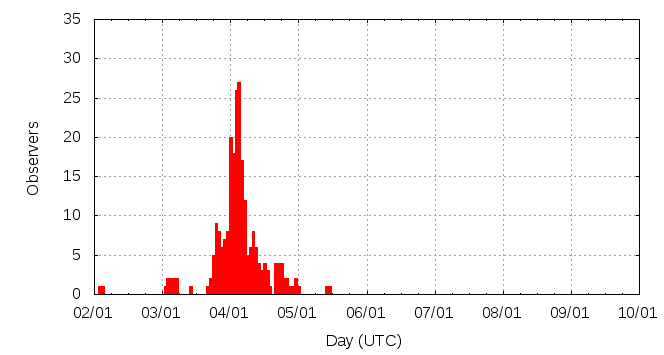

[ www.imo.net ]
This page shows automated results of the Quadrantids 2012, based on visual observations reported by citizen scientists through the report form of the International Meteor Organization (IMO). The information on this page is generated automatically; for scientific use please refer to manual analyses published in scientific journals (such as WGN). Send your feedback regarding this page to Geert Barentsen.
Page contents:
Note that the data will finally go into the Visual Meteor Database (VMDB) with manual inspection and rectifications. We are curretly completing the files of 2008-2011. The VMDB is an enormous project - any help will be greatly appreciated.
Page generated: 2012 February 17 at 14:09 UTC.
The graph below shows the ZHR (Zenithal Hourly Rate), which is the number of meteors an observer would see under a very dark sky with the radiant of the shower in zenith.
ZHRmax = 83 based on 2033 Quadrantids reported in 349 intervals, assuming population index r = 2.1

| Time (UTC) | Solarlon | nINT | nQUA | ZHR | Particle density | |
|---|---|---|---|---|---|---|
| 2012-01-02 03:30 | 280.959 | 1 | 1 | 10 | ±7 | 17 / 109·km3 |
| 2012-01-03 03:42 | 281.987 | 7 | 24 | 6 | ±1 | 10 / 109·km3 |
| 2012-01-03 16:34 | 282.533 | 8 | 23 | 26 | ±5 | 44 / 109·km3 |
| 2012-01-03 20:42 | 282.708 | 8 | 20 | 27 | ±6 | 46 / 109·km3 |
| 2012-01-03 21:55 | 282.760 | 4 | 20 | 49 | ±11 | 84 / 109·km3 |
| 2012-01-03 23:19 | 282.820 | 19 | 32 | 46 | ±8 | 78 / 109·km3 |
| 2012-01-04 00:21 | 282.864 | 34 | 94 | 48 | ±5 | 82 / 109·km3 |
| 2012-01-04 01:14 | 282.901 | 34 | 109 | 39 | ±4 | 66 / 109·km3 |
| 2012-01-04 02:20 | 282.948 | 44 | 262 | 45 | ±3 | 77 / 109·km3 |
| 2012-01-04 03:17 | 282.988 | 47 | 299 | 55 | ±3 | 94 / 109·km3 |
| 2012-01-04 04:16 | 283.030 | 37 | 334 | 63 | ±3 | 107 / 109·km3 |
| 2012-01-04 05:18 | 283.074 | 30 | 239 | 82 | ±5 | 140 / 109·km3 |
| 2012-01-04 06:08 | 283.109 | 7 | 74 | 80 | ±9 | 136 / 109·km3 |
| 2012-01-04 07:42 | 283.175 | 4 | 29 | 54 | ±10 | 92 / 109·km3 |
| 2012-01-04 08:41 | 283.217 | 11 | 81 | 80 | ±9 | 136 / 109·km3 |
| 2012-01-04 09:26 | 283.249 | 8 | 75 | 64 | ±7 | 109 / 109·km3 |
| 2012-01-04 10:32 | 283.296 | 8 | 46 | 56 | ±8 | 95 / 109·km3 |
| 2012-01-04 11:35 | 283.341 | 7 | 56 | 48 | ±6 | 82 / 109·km3 |
| 2012-01-04 12:43 | 283.388 | 9 | 71 | 51 | ±6 | 87 / 109·km3 |
| 2012-01-04 13:37 | 283.427 | 4 | 45 | 58 | ±9 | 99 / 109·km3 |
| 2012-01-04 17:12 | 283.579 | 4 | 20 | 78 | ±17 | 133 / 109·km3 |
| 2012-01-04 18:12 | 283.621 | 4 | 24 | 83 | ±17 | 141 / 109·km3 |
| 2012-01-04 19:14 | 283.665 | 4 | 22 | 62 | ±13 | 106 / 109·km3 |
| 2012-01-04 20:07 | 283.703 | 3 | 21 | 70 | ±15 | 119 / 109·km3 |
| 2012-01-05 03:13 | 284.004 | 3 | 12 | 29 | ±8 | 49 / 109·km3 |
The reported intervals are automatically added together into the bins shown above, based on the number of meteors and the distribution of the intervals. For each bin, the following parameters are computed:
Data has been received from 63 observers in 24 countries. Thank you for your efforts!
Note: click on the map for an interactive version.

| Observer | Country | Teff | nQUA |
|---|---|---|---|
| Ioan Agavriloaiei | Romania | 2.48h | 49 |
| Karl Antier | France | 1.00h | 50 |
| Rainer Arlt | Germany | 1.27h | 37 |
| Fodor Balázs | Hungary | 0.51h | 4 |
| Leonardo Barbosa | Brazil | 1.13h | 6 |
| Steve Berte | United States | 1.42h | 28 |
| Jean-marie Biets | Belgium | 1.25h | 9 |
| Zsofia Biro | Hungary | 6.50h | 107 |
| Jens Briesemeister | Germany | 1.50h | 25 |
| Steven Brown | United Kingdom | 1.00h | 13 |
| Apostolos Christou | United Kingdom | 1.33h | 19 |
| Daniel Cosovanu | Romania | 1.02h | 27 |
| Ilie Cosovanu | Romania | 1.02h | 21 |
| Mark Davis | United States | 1.96h | 19 |
| Peter Detterline | United States | 2.95h | 37 |
| Sietse Dijkstra | Netherlands | 0.83h | 7 |
| Todor Dimitrov | Bulgaria | 2.48h | 13 |
| Motahareh Ebrahimi | Iran | 0.69h | 15 |
| Shlomi Eini | Israel | 2.00h | 36 |
| Richard Fleet | United Kingdom | 2.72h | 69 |
| William Godley | United States | 2.42h | 13 |
| Shy Halatzi | Israel | 2.39h | 40 |
| Oliver Hanke | Germany | 1.33h | 14 |
| Carl Hergenrother | United States | 0.63h | 16 |
| Jane Houston Jones | United States | 3.35h | 16 |
| Chengyun Huang | China | 2.5h | 3 |
| Gregory Jones | United States | 1.00h | 18 |
| Karoly Jonas | Hungary | 6.75h | 74 |
| Mayura Karandikar | India | 1.49h | 27 |
| Masoume Kazemi | Iran | 0.69h | 12 |
| André Knöfel | Germany | 4.92h | 22 |
| Katsuyuki Kobayashi | Japan | 0.50h | 0 |
| Richard Kramer | United States | 0.48h | 5 |
| Anna Levin | Israel | 2.97h | 47 |
| Junyi Li | China | 1.00h | 2 |
| Alexandr Maidik | Ukraine | 1.00h | 1 |
| Qiang Ma | China | 2.00h | 25 |
| Pierre Martin | Canada | 3.66h | 121 |
| Alastair Mcbeath | United Kingdom | 4.37h | 97 |
| Artyom Novichonok | Russia | 0.79h | 5 |
| Francisco Ocaña González | Spain | 1.85h | 94 |
| Ella Ratz | Israel | 2.33h | 35 |
| Clara Ricken | Germany | 1.22h | 23 |
| Miguel Rojas | Costa Rica | 0.32h | 3 |
| Miguel Rojas | Costa Rica | 0.31h | 8 |
| Raloca Rufu | Israel | 3.60h | 55 |
| Mikiya Sato | Japan | 0.50h | 1 |
| Christian Schmiel | Germany | 0.97h | 23 |
| Kai Schultze | Germany | 2.32h | 32 |
| Hideki Seo | Japan | 0.50h | 5 |
| Florin Stancu | Romania | 4.30h | 155 |
| Wesley Stone | United States | 2.89h | 124 |
| Richard Taibi | United States | 0.65h | 9 |
| Csilla Tepliczky | Hungary | 1.06h | 2 |
| Istvan Tepliczky | Hungary | 1.00h | 16 |
| Kazumi Terakubo | Japan | 1.00h | 5 |
| Rushikesh Tilak | India | 2.28h | 14 |
| Jurgen Rendtel | Germany | 5.08h | 74 |
| Jakub Koukal | Czech Republic | 10.25h | 54 |
| Branislav Savic | Serbia | 1.58h | 51 |
| Michel Vandeputte | Belgium | 4.77h | 58 |
| Shigeo Uchiyama | Japan | 5.13h | 91 |
| Peter Van Leuteren | Netherlands | 1.25h | 19 |
| Spandan Waghmare | India | 1.50h | 10 |
| Oliver Wusk | Germany | 1.67h | 15 |
Create your own analysis. The files below can be opened using Excel:
qua2012_rate.csv (number of meteors per interval per observer)
qua2012_magn.csv (number of meteors per magnitude bin per observer)
The information on this page may be distributed freely provided credit is given to the International Meteor Organization (IMO) and, when possible, to the individual observers. The computer facilities to generate this page are provided by ESA/RSSD and Armagh Observatory.
References: